Fashion Marketing & Sales Analysis
A tactical Power BI report for a fashion retail & e-commerce business — connecting marketing spend across multi-channel campaigns to actual sales revenue, and optimizing budget performance based on key marketing KPIs such as CPM, CPC, CTR, and ROAS.
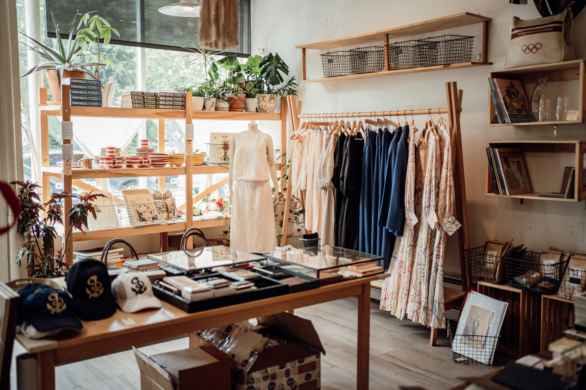
01. Business Challenge
A fashion retail & e-commerce company runs multi-channel marketing campaigns (online and offline) to boost sales and build brand presence. However, senior leadership lacked a unified, data-driven view of how marketing budget was being spent and whether each campaign was actually driving revenue.
The core business objective was to build a tactical report that answers three strategic questions:
- Budget Overview: Where is the marketing budget going, and how is it distributed across campaigns, channels, and product SKUs?
- Campaign Performance: Which campaigns are delivering results in terms of CPM, CPC, CTR, and ROAS — and which ones are underperforming?
- Revenue Attribution: How does marketing spend directly link to sales revenue? Which SKUs and campaigns generate the best return on investment?
02. My Approach
To build a practical and effective dashboard, I applied principles from Stanford's Design Thinking process, walking through the problem from the perspective of a marketing manager:
03. Design Thinking
Step 1. Empathize
Identify the stakeholder's goals and understand the underlying business problems from the marketing manager's perspective.
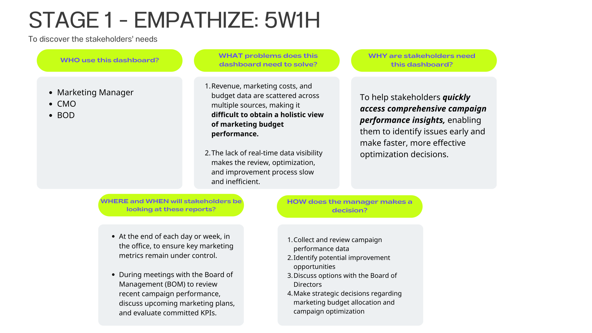
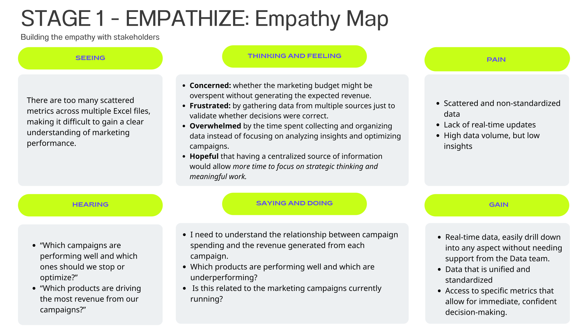
Step 2. Define
Clearly define the core KPIs and metrics the report must surface: Budget spend breakdown, CPM, CPC, CTR, ROAS, and Revenue attribution by campaign & SKU.
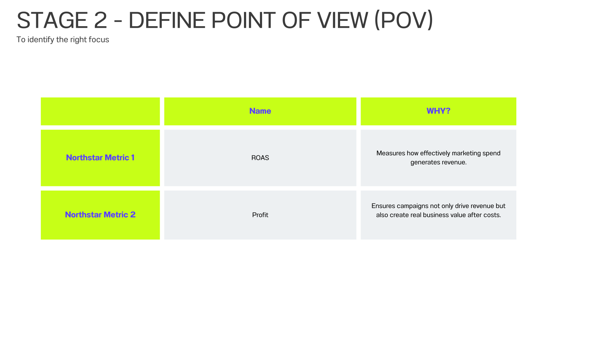
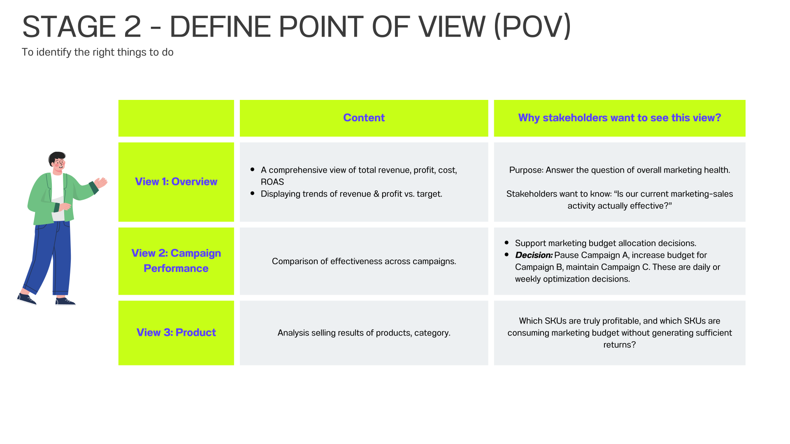
Step 3. Ideate
Brainstorm data visualization layouts — deciding which charts best communicate budget distribution, campaign comparisons, and SKU-level ROAS.
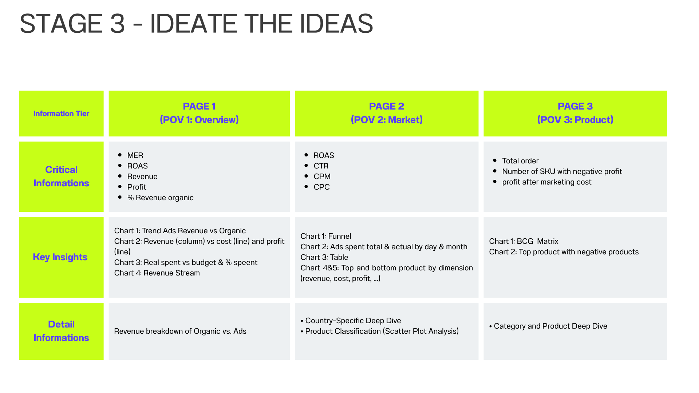
Step 4. Prototype & Step 5. Test
Continuously prototype and test the report layout against real stakeholder questions until the design was intuitive and self-explanatory.
04. Data Preparation & Modeling
1. Data Transform with Power Query
The dataset consisted of three core tables — Order
(total revenue), mkt_camp_by_sku_cost (ad revenue by SKU per campaign),
and mkt_camp_cost (campaign-level marketing spend with CPM, CPC, CTR
metrics). Key transformations included:
- Standardizing data types and cleaning column names across all three tables for consistent joins.
- Creating a unified Product dimension table from the SKU-level catalog for proper category grouping.
- Generating calculated columns to support ROAS, ROI, and effective cost-per-result metrics across each campaign-SKU combination.
2. Building the Data Model
I implemented a Star Schema with
Order as the central Fact table, linked to campaign spend and SKU
dimension tables via one-to-many relationships. This allowed seamless cross-filtering
between revenue, marketing costs, and product categories in a single report view.

05. Visualizations
How to Use This Dashboard
- Optimal Viewing: Click the Fit to page icon or the Full screen arrows at the bottom right corner of the dashboard for the best experience.
- Exploration: Navigate between the report pages (Budget Overview, Campaign Performance, Revenue Attribution) using the top buttons or bottom pagination.
- Interaction: Use the side dropdowns to filter by campaign, channel, or product category. Click on any chart element to cross-filter the entire page, and hover over data points to reveal detailed tooltips.
06. Key Insights & Recommendations
Key Insights
1. Spending Less is Actually a Signal, Not a Problem
The campaign consumed 82% of the total budget (396.7M / 483.3M), generating ~64% of total revenue through the ads channel. On the surface, the 18% unspent budget may look like underperformance — but the scatter plot of Ads Spend vs. ROAS reveals a clear negative correlation: the more we spend, the lower the ROAS becomes. This means the algorithm has already found the efficiency ceiling. Forcing the remaining budget into the same campaigns would yield diminishing returns, not more revenue.
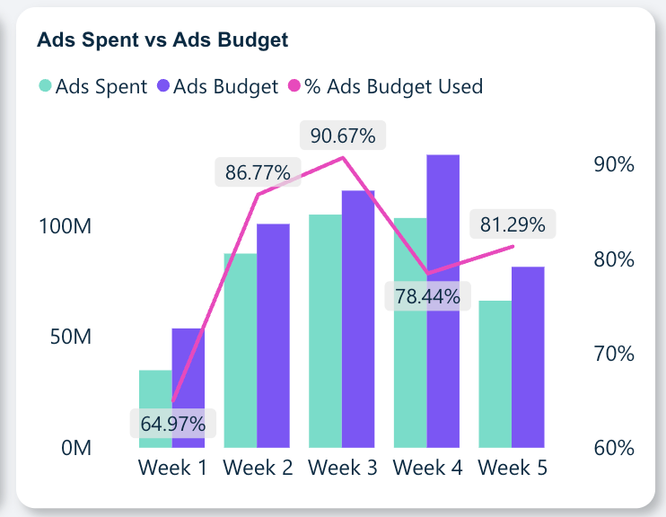
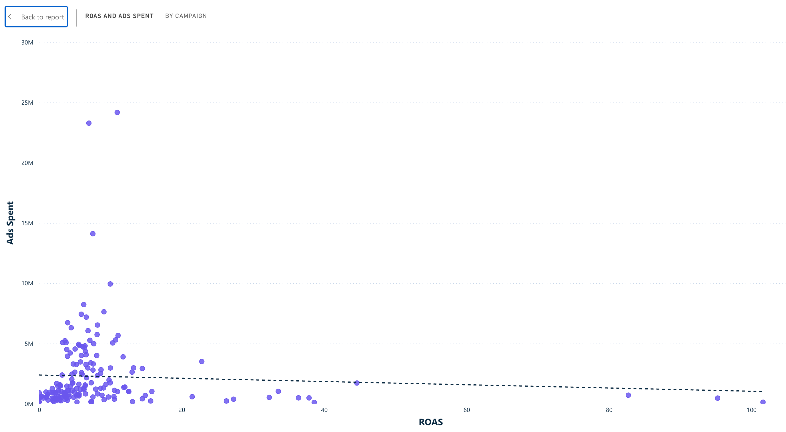
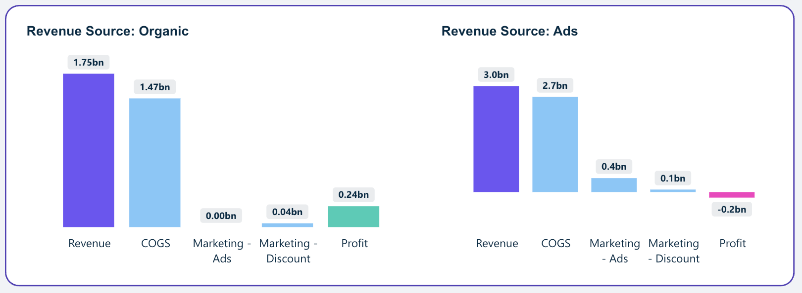
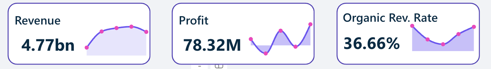
2. Organic is Carrying the Entire Business
Despite representing only 36% of total revenue, the organic channel is the sole source of profit for the company. Meanwhile, the ads channel — which drives 64% of revenue — is operating at a net loss after accounting for COGS and marketing spend. This inversion reveals a critical structural risk: if organic traffic declines for any reason (algorithm change, seasonality), there is no profitable fallback. The business is scaling revenue by subsidizing sales — not by building a sustainable margin engine.
3. Budget is Flowing in the Opposite Direction of Profit
Two compounding problems emerge at the product level. First, the Audrey Shirt series (1, 2 & 3) absorbed nearly 74M VND in ads spend — the highest of any SKU group — yet they are consistently the largest loss-makers on the dashboard. Budget is flowing directly into unprofitable products. Second, Áo Tách Set — the category with the highest unit volume — has a COGS that exceeds its selling price, meaning every sale made is a sale at a loss. Scaling ads spend on this category only amplifies the losses. Meanwhile, Váy Chiết Eo Ôm (ROAS 22.06, 3× the portfolio average) remains underweighted in the budget allocation.
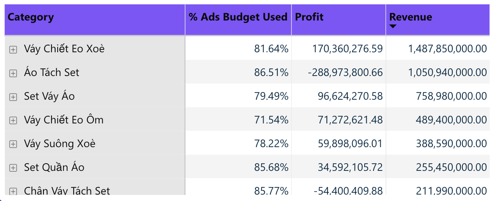
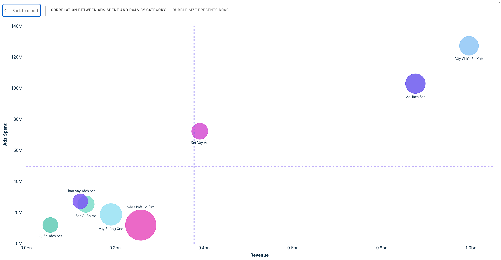
Strategic Recommendations
- Respect the ROAS ceiling — don't force-spend: The negative ROAS-vs-Spend trend shows the current campaign set has hit its efficiency limit. Instead of pushing the remaining 18% budget into the same campaigns, reallocate it toward high-ROAS periods (e.g., around campaign event days) or invest in creative refreshes to reset the algorithm's delivery curve.
- Shift budget from Audrey Shirt → Váy Chiết Eo Ôm: Redirect the ~74M currently concentrated on the Audrey Shirt series to Váy Chiết Eo Ôm — the category with ROAS 22.06 (nearly 3× the portfolio average). Even a partial reallocation could significantly improve overall campaign profitability without increasing total spend.
- Fix Áo Tách Set's unit economics before scaling: Halt ads investment in this category until either the selling price is raised or the COGS is renegotiated to restore positive margin. Running ads on a product with inverted unit economics means every incremental order deepens the loss. A pricing audit or supplier renegotiation should precede any future campaign activation for this category.